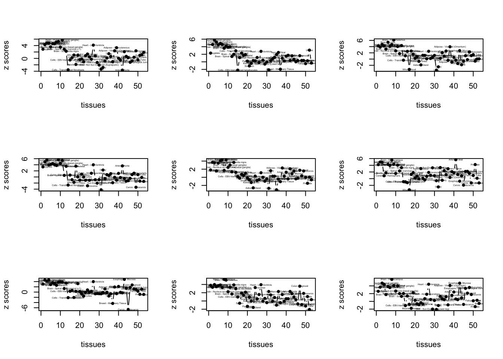
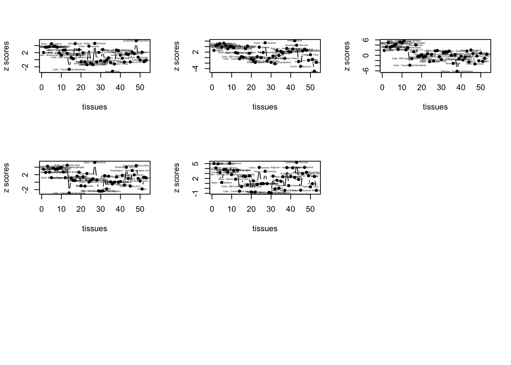
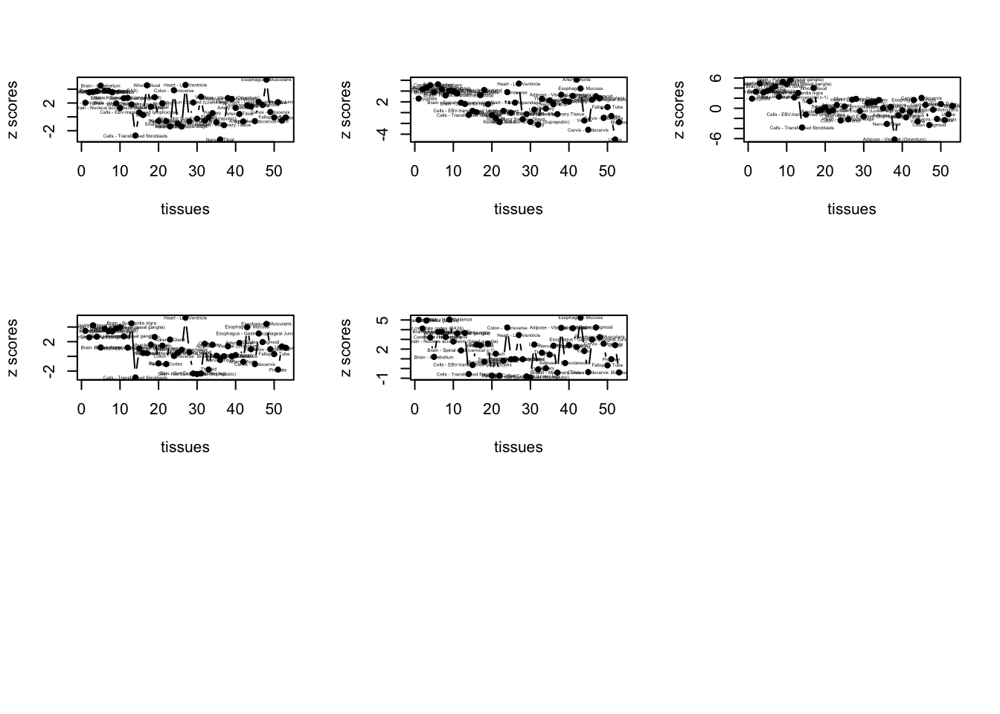

Enrichment of brain tissues
data <- get(load("../output/age_cor_nonmash.rda"))
zdat <- data$betahat/data$sebetahat
index <- grep("Brain", U)
zdat_thresh <- apply(abs(zdat), 2, function(x) {
y <- median(x[index]) - median(x[-index])
return(y)})imp_genes_indices <- order(zdat_thresh, decreasing = TRUE)[1:100]
imp_genes_names <- gene_names_1[imp_genes_indices]
imp_genes_names[1:10]## [1] "ENSG00000176476" "ENSG00000133315" "ENSG00000176783"
## [4] "ENSG00000160213" "ENSG00000197568" "ENSG00000140368"
## [7] "ENSG00000254578" "ENSG00000126458" "ENSG00000143303"
## [10] "ENSG00000010818"par(mfrow=c(3,3))
for(m in 1:50){
plot(1:53, zdat[order_index,imp_genes_indices[m]], pch=20, type="b", xlab = "tissues", ylab="z scores")
text(1:53, zdat[order_index,imp_genes_indices[m]], U[order_index], cex=0.3)
} 

write.table(imp_genes_names[1:100], file = "../utilities/age_flash/brain.txt", quote = FALSE, row.names = FALSE, col.names = FALSE)
out <- mygene::queryMany(imp_genes_names[1:50], scopes="ensembl.gene", fields=c("name", "summary"), species="human");## Finished
## Pass returnall=TRUE to return lists of duplicate or missing query terms.cbind.data.frame(out$name, out$summary)## out$name
## 1 SAGA complex associated factor 29
## 2 MACRO domain containing 1
## 3 RUN and FYVE domain containing 1
## 4 cystatin B
## 5 HERV-H LTR-associating 3
## 6 proline-serine-threonine phosphatase interacting protein 1
## 7 <NA>
## 8 related RAS viral (r-ras) oncogene homolog
## 9 ribosomal RNA adenine dimethylase domain containing 1
## 10 human immunodeficiency virus type I enhancer binding protein 2
## 11 deoxythymidylate kinase
## 12 phytanoyl-CoA dioxygenase domain containing 1
## 13 chromosome 14 open reading frame 93
## 14 metallothionein 1F
## 15 <NA>
## 16 <NA>
## 17 UHRF1 binding protein 1 like
## 18 <NA>
## 19 <NA>
## 20 uncharacterized LOC101927809
## 21 glial fibrillary acidic protein
## 22 <NA>
## 23 <NA>
## 24 brain protein I3
## 25 Kruppel like factor 15
## 26 abl interactor 2
## 27 amyloid beta precursor protein binding family A member 3
## 28 coiled-coil domain containing 61
## 29 glutathione S-transferase pi 1
## 30 family with sequence similarity 107 member A
## 31 <NA>
## 32 dual specificity phosphatase 18
## 33 <NA>
## 34 parathyroid hormone 1 receptor
## 35 alpha-2-glycoprotein 1, zinc-binding
## 36 serine incorporator 3
## 37 SPG21, maspardin
## 38 aspartic peptidase, retroviral-like 1
## 39 phospholipase C beta 3
## 40 <NA>
## 41 ancient ubiquitous protein 1
## 42 SHANK associated RH domain interactor
## 43 CARS antisense RNA 1
## 44 MIER family member 2
## 45 terminal uridylyl transferase 1, U6 snRNA-specific
## 46 pleckstrin homology and FYVE domain containing 1
## 47 dipeptidyl peptidase 7
## 48 metallothionein 1G
## 49 <NA>
## 50 <NA>
## out$summary
## 1 CCDC101 is a subunit of 2 histone acetyltransferase complexes: the ADA2A (TADA2A; MIM 602276)-containing (ATAC) complex and the SPT3 (SUPT3H; MIM 602947)-TAF9 (MIM 600822)-GCN5 (KAT2A; MIM 602301)/PCAF (KAT2B; MIM 602303) acetylase (STAGA) complex. Both of these complexes contain either GCN5 or PCAF, which are paralogous acetyltransferases (Wang et al., 2008 [PubMed 18838386]).
## 2 <NA>
## 3 This gene encodes a protein that contains a RUN domain and a FYVE-type zinc finger domain. The encoded protein binds to phosphatidylinositol-3-phosphate (PI3P) and plays a role in early endosomal trafficking, tethering and fusion through interactions with small GTPases including Rab4, Rab5 and Rab14. Alternatively spliced transcript variants encoding multiple isoforms have been observed for this gene.
## 4 The cystatin superfamily encompasses proteins that contain multiple cystatin-like sequences. Some of the members are active cysteine protease inhibitors, while others have lost or perhaps never acquired this inhibitory activity. There are three inhibitory families in the superfamily, including the type 1 cystatins (stefins), type 2 cystatins and kininogens. This gene encodes a stefin that functions as an intracellular thiol protease inhibitor. The protein is able to form a dimer stabilized by noncovalent forces, inhibiting papain and cathepsins l, h and b. The protein is thought to play a role in protecting against the proteases leaking from lysosomes. Evidence indicates that mutations in this gene are responsible for the primary defects in patients with progressive myoclonic epilepsy (EPM1). One type of mutation responsible for EPM1 is the expansion in the promoter region of this gene of a CCCCGCCCCGCG repeat from 2-3 copies to 30-78 copies.
## 5 <NA>
## 6 This gene encodes a cytoskeletal protein that is highly expressed in hemopoietic tissues. This protein functions via its interaction with several different proteins involved in cytoskeletal organization and inflammatory processes. It binds to the cytoplasmic tail of CD2, an effector of T cell activation and adhesion, downregulating CD2-triggered adhesion. It binds PEST-type protein tyrosine phosphatases (PTP) and directs them to c-Abl kinase to mediate c-Abl dephosphorylation, thereby, regulating c-Abl activity. It also interacts with pyrin, which is found in association with the cytoskeleton in myeloid/monocytic cells and modulates immunoregulatory functions. Mutations in this gene are associated with PAPA (pyogenic sterile arthritis, pyoderma gangrenosum, and acne) syndrome. It is hypothesized that the disease-causing mutations compromise physiologic signaling necessary for the maintenance of a proper inflammatory response.
## 7 <NA>
## 8 The protein encoded by this gene is a small GTPase involved in diverse processes including angiogenesis, vascular homeostasis and regeneration, cell adhesion, and neuronal axon guidance. Mutations in this gene are found in many invasive cancers.
## 9 <NA>
## 10 This gene encodes a member of a family of closely related, large, zinc finger-containing transcription factors. The encoded protein regulates transcription by binding to regulatory regions of various cellular and viral genes that maybe involved in growth, development and metastasis. The protein contains the ZAS domain comprised of two widely separated regions of zinc finger motifs, a stretch of highly acidic amino acids and a serine/threonine-rich sequence.
## 11 <NA>
## 12 <NA>
## 13 <NA>
## 14 <NA>
## 15 <NA>
## 16 <NA>
## 17 <NA>
## 18 <NA>
## 19 <NA>
## 20 <NA>
## 21 This gene encodes one of the major intermediate filament proteins of mature astrocytes. It is used as a marker to distinguish astrocytes from other glial cells during development. Mutations in this gene cause Alexander disease, a rare disorder of astrocytes in the central nervous system. Alternative splicing results in multiple transcript variants encoding distinct isoforms.
## 22 <NA>
## 23 <NA>
## 24 <NA>
## 25 <NA>
## 26 <NA>
## 27 The protein encoded by this gene is a member of the X11 protein family. It is an adapter protein that interacts with the Alzheimer's disease amyloid precursor protein. This gene product is believed to be involved in signal transduction processes. This gene is a candidate gene for Alzheimer's disease.
## 28 <NA>
## 29 Glutathione S-transferases (GSTs) are a family of enzymes that play an important role in detoxification by catalyzing the conjugation of many hydrophobic and electrophilic compounds with reduced glutathione. Based on their biochemical, immunologic, and structural properties, the soluble GSTs are categorized into 4 main classes: alpha, mu, pi, and theta. This GST family member is a polymorphic gene encoding active, functionally different GSTP1 variant proteins that are thought to function in xenobiotic metabolism and play a role in susceptibility to cancer, and other diseases.
## 30 <NA>
## 31 <NA>
## 32 Dual-specificity phosphatases (DUSPs) constitute a large heterogeneous subgroup of the type I cysteine-based protein-tyrosine phosphatase superfamily. DUSPs are characterized by their ability to dephosphorylate both tyrosine and serine/threonine residues. They have been implicated as major modulators of critical signaling pathways. DUSP18 contains the consensus DUSP C-terminal catalytic domain but lacks the N-terminal CH2 domain found in the MKP (mitogen-activated protein kinase phosphatase) class of DUSPs (see MIM 600714) (summary by Patterson et al., 2009 [PubMed 19228121]).
## 33 <NA>
## 34 The protein encoded by this gene is a member of the G-protein coupled receptor family 2. This protein is a receptor for parathyroid hormone (PTH) and for parathyroid hormone-like hormone (PTHLH). The activity of this receptor is mediated by G proteins which activate adenylyl cyclase and also a phosphatidylinositol-calcium second messenger system. Defects in this receptor are known to be the cause of Jansen's metaphyseal chondrodysplasia (JMC), chondrodysplasia Blomstrand type (BOCD), as well as enchodromatosis. Two transcript variants encoding the same protein have been found for this gene.
## 35 <NA>
## 36 <NA>
## 37 The protein encoded by this gene binds to the hydrophobic C-terminal amino acids of CD4 which are involved in repression of T cell activation. The interaction with CD4 is mediated by the noncatalytic alpha/beta hydrolase fold domain of this protein. It is thus proposed that this gene product modulates the stimulatory activity of CD4. Mutations in this gene are associated with autosomal recessive spastic paraplegia 21 (SPG21), also known as mast syndrome. Alternative splicing results in multiple transcript variants.
## 38 Filaggrin is a structural protein that is crucial for in the development and maintenance of the skin barrier. This gene encodes a retroviral-like protease involved in profilaggrin-to-filaggrin processing. Expression is found primarily in the epidermis and inner root sheath of hair follicles.
## 39 This gene encodes a member of the phosphoinositide phospholipase C beta enzyme family that catalyze the production of the secondary messengers diacylglycerol and inositol 1,4,5-triphosphate from phosphatidylinositol in G-protein-linked receptor-mediated signal transduction. Alternative splicing results in multiple transcript variants.
## 40 <NA>
## 41 The protein encoded this gene is involved in several pathways including quality control of misfolded proteins in the endoplasmic reticulum and lipid droplet accumulation. Lipid droplets are organelles in the cytoplasm that store neutral lipids such as cholesterol esters and trigylycerides to prevent the overabundance of free cholesterol and fatty acids in cells, but also to act as storage for other metabolic processes, such as membrane biogenesis. Reduced expression of this gene results in reduced lipid droplet clustering, a function that is dependent on ubiquitination of the protein. This protein contains multiple domains including a hydrophobic N-terminal domain, an acetyltranferase domain, a ubiquitin-binding CUE domain, and a UBE2B2-binding domain (G2BR). Alternative splicing results in multiple transcript variants.
## 42 <NA>
## 43 <NA>
## 44 <NA>
## 45 This gene encodes a nucleotidyl transferase that functions as both a terminal uridylyltransferase and a nuclear poly(A) polymerase. The encoded enzyme specifically adds and removes nucleotides from the 3' end of small nuclear RNAs and select mRNAs and may function in controlling gene expression and cell proliferation.
## 46 <NA>
## 47 The protein encoded by this gene is a post-proline cleaving aminopeptidase expressed in quiescent lymphocytes. The resting lymphocytes are maintained through suppression of apoptosis, a state which is disrupted by inhibition of this novel serine protease. The enzyme has strong sequence homology with prolylcarboxypeptidase and is active at both acidic and neutral pH.
## 48 <NA>
## 49 <NA>
## 50 <NA>pathway2 <- read.delim("../utilities/age_flash/brain_pathway.tab")
if(length(which(pathway2$q.value < 0.05)) > 2){
pathway2 <- pathway2[which(pathway2$q.value < 0.1),]
}
maxpath = 75
pathway <- pathway2[1:min(maxpath, dim(pathway2)[1]), ]
ensembl_genes <- pathway$members_input_overlap
pathway_list_genes <- sapply(ensembl_genes, function(x) return(strsplit(as.character(x), "; ")))
all_genes <- Reduce(union, pathway_list_genes)
pathway_mat <- matrix(0, length(pathway_list_genes), length(all_genes))
for(l in 1:dim(pathway_mat)[1]){
pathway_mat[l, match(pathway_list_genes[[l]], all_genes)] <- 1
}
pathway_bimat <- (pathway_mat)%*%t(pathway_mat)
pathway_bimat_prop <- diag(1/sqrt(diag(pathway_bimat)), dim(pathway_bimat)[1]) %*% pathway_bimat %*% diag(1/sqrt(diag(pathway_bimat)), dim(pathway_bimat)[1])
col=c(rev(rgb(seq(1,0,length=1000),1,seq(1,0,length=1000))),
rgb(1,seq(1,0,length=1000),seq(1,0,length=1000)))
heatmap(pathway_bimat_prop, labRow = pathway$pathway, labCol = pathway$pathway, cexRow = 0.3, cexCol = 0.3, col = col, zlim = c(-1,1),
scale = "none", margins = c(5, 5))